Meet our Instructors
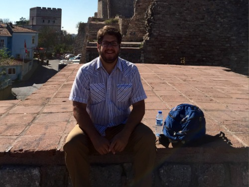
TJ can usually be found in one of three places: chasing his dogs around the yard, figuring out how not to lose a finger with the new saw he got for Christmas, or sitting in front of his laptop coding the next billion dollar idea -- or, as is often for TJ, the next thousand dollar idea. A native Texan, TJ's been a working developer for over 15 years and loves helping new coders figure out what a for loop actually does. TJ is also Co-founder of We & Co and Standard Code.
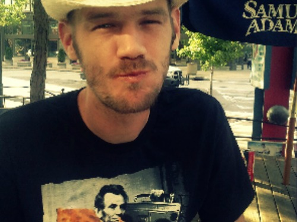
Code laureate. A lover of events, genetic algorithms, and empowering people with knowledge, Robby can be found most days walking the streets of Atlanta, slaving away over a hot keyboard, or spending time with his beautiful wife Elizabeth. Robby lovingly crafts his lessons from more than 10 years of experience designing and building production web applications. Robby is currently a Senior Software Engineer at Kevy.
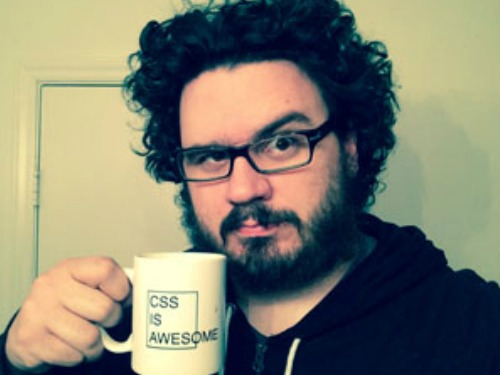
Nathan Batson is a WNC native, born and raised, educated at UNC Asheville with a background in Art, Computer Science, and 3D Animation. Nathan's 10 years of web experience started with Flash, before it was a dirty word, and transitioned to traditional full stack web development. For the last 5 years he has been a professional Ruby on Rails developer. After hours he spends time with his awesome wife Rebecca, drawing bad puns in Adobe Illustrator, cycling on the parkway, wasting time playing PC games, and building pet programming projects. Nathan is currently a full time contractor for Zamzee.com.

Sarah Hudson is a native Charlottean and a long-time 'techy.' With a background in Web Technologies and Design, she started out as a graphic and web designer for local Charlotte product development company Little Idea and went on to work as the lead graphic designer at Enventys. Eager to learn more about the web and software development side of things, Sarah joined the first TTS crew to learn Ruby on Rails in Atlanta. Now she works as a web and software developer at CheckAppointments, a SaaS company in Charlotte. In her free time, she loves discovering new music, ballroom dancing, exploring nature, and learning new programming techniques.

Louis is an avid coder with a strong focus in Ruby on Rails, HTML5, and CSS. Louis graduated from Brown University and spent some time in San Francisco after school. When he isn't busy teaching students in Charlotte, he spends his time jamming out on the piano and exploring the overlap between programming and musical composition. You can also catch him jetting around town on his brand new scooter.

Travis has been developing Rails apps since '07 and absolutely loves empowering others by teaching them how to create beautiful code from blank text documents. When he's not coaching his two boys’ basketball teams or hiking with his wife in the Smokey Mountains, Travis is learning as much as he can about how to be a better software craftsman. If you stop by his Raritan.com office you'll see him honing his skills while developing software that helps run many of the world's largest data centers.

David has been designing and developing websites and mobile applications for the last 13 years and loving every minute of it (well there was that one minute that wasn't any fun...). He brings a unique mix of frontend design and backend developing experience to the classroom which allows him to see the coding world a bit differently. His company, Big Pixel, focuses on building prototypes, MVPs, and full-blown apps and websites for startups and small business.When not working or teaching, David can usually be found at his church, with his wife and two kids, or playing a computer game of some sort.
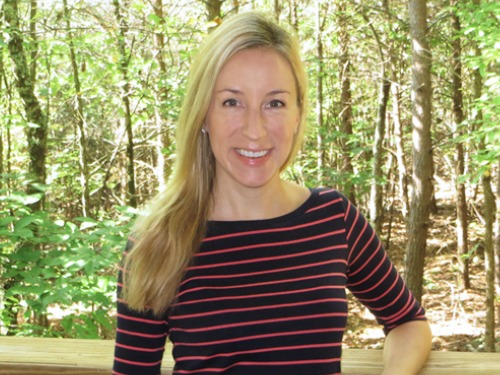
Joanna was born and raised in Ontario, Canada. Growing up painting and playing piano, she developed a love for things both artistic and technical. Naturally, when she discovered the world of web design she found her passion and has enjoyed coding HTML and CSS ever since. She completed her Bachelor degree in Multimedia & Communication Studies at McMaster University. After graduating, she moved to Virginia and worked as a Multimedia Developer at the University of Virginia Darden School of Business designing award-winning interactive learning material. Joanna moved to Atlanta in 2008 where she earned her MFA in Interactive Design & Game Development from SCAD while also teaching Graphic & Web Design full-time at The Art Institute of Atlanta. Joanna absolutely loves sharing her passion for web design with others. When she’s not teaching, she’s learning. Otherwise, she’s out hiking, biking, enjoying vegetarian cuisine around town, or being her usual left-handed, Ukrainian-speaking, Canadian self.

In addition to being a leader of the software development community in Charlotte, Jim Van Fleet is President and founder of it's bspoke, a boutique software consultancy. His monthly startup newsletter has reached over one thousand subscribers. He has been programming computers professionally for over 15 years and has degrees in Computer Science and Managerial Studies from Rice University. He currently serves as Brigade Captain for Code for Charlotte.
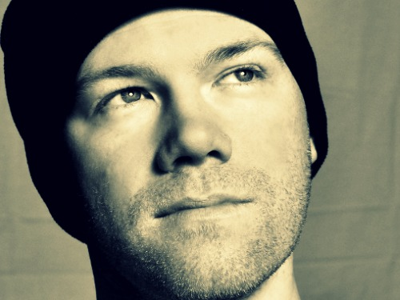
Scott E Lundgren is a Charlotte based software developer. He strives to make businesses more profitable. Scott builds applications that generate revenue and reduces operation costs.
His experience has come from a variety of organizations, most recently within higher education. There he created the infrastructure for the university wide content management system. Scott has built tools that allowed a a non-profit to scale and become national. Other work of note has been with a venture backed startup that was in the top ten of most popular websites. He started at a Fortune 100 corporation where his work included special projects for the CIO. Scott's education in Computer Science comes from Vanderbilt University's School of Engineering.
Efforts to help Charlotte be innovative are through Code for Charlotte and Daemon Fund.
Away from the keyboard Scott is at a farmer's market, supporting the arts or on a yoga mat..
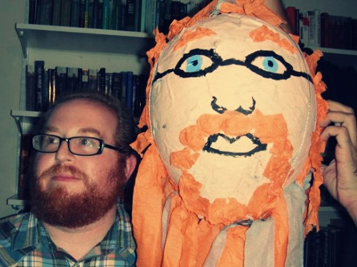
Aaron was working his way through a CS degree at Georgia State University when he decided to eschew the traditional educational path and focus on web development, attending the very first TTS adult session. He has been working with front-end design and writing content for the web for years, and more recently worked at Toolbox No. 9, an awesome local dev shop. Aaron knows the TTS curriculum like the back of his hand, having acted as TA and tutor for the past three ATL sessions. When Aaron isn't coding, he is at home cooking (and, yeah, still coding some in his spare time), or out travelling near and far, with his wife and their baby boy.

Jaime is a recent Atlanta transplant who loves food trucks, live music and good craft beer. A UX/UI designer for over a decade, she's been known to cause trouble in various industries along the east coast from entertainment to political advocacy. A human pyramid and narwhal enthusiast Jaime can usually be found bouncing around Piedmont Park or playing soccer with her small dog, Frankie. A former TTS graduate and teaching assistant Jaime finds joy in regularly adding new tools to her tech arsenal.
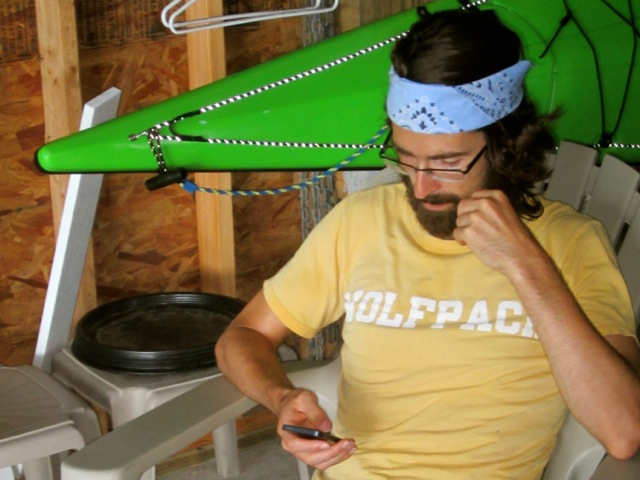
Brandan has been writing Rails since he first saw DHH make a blog in 15 minutes back in 2007. Following a brief freelancing career, Brandan started working at Raritan, making Rails apps, automating everything in sight, and leveraging synergies to shift the paradigms of value chain polymers. He's always found joy in teaching, whether as a lab instructor at NC State or giving tech talks at the office, and he can't wait to espouse the virtues of Rails to TTS students in Raleigh. Away from the computer, he's probably chasing a frisbee or a volleyball.
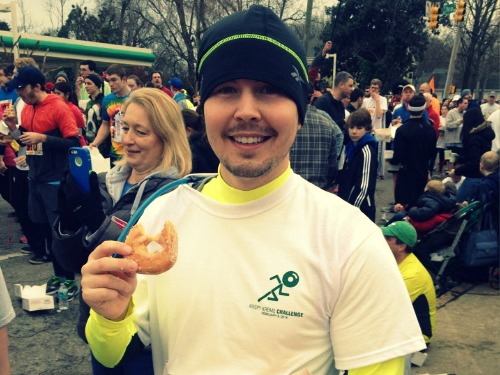
In addition to being an instructor for Tech Talent South, Sean also holds the title of TTS Alum. He is also an NC State alumni and a Raleigh local. Sean has experienced firsthand the transition of this city into a top tech hub with a thriving startup and small business community where programming savvy is a must have. Following the end of his program, Sean began working on applications of his own. He realized that web development in Rails evolved from a hobby to what is now a great passion. For him, it has been an incredible journey to go from student to teacher and he is exuberant to have the opportunity to teach others how to code.
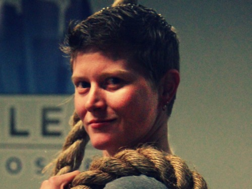
Alex has a passion for all things coding and teaching, so it’s no surprise that being an instructor with Tech Talent South came naturally. Alex is absolutely thrilled to help empower people with a new skill set that has the potential to change their future. Raleigh has been her home for over 10 years. In addition to being an instructor with Tech Talent South, Alex is a web developer for a local development firm. In her free time Alex can be found doing something else she is very passionate about - training in Olympic Weightlifting and competing in local meets.
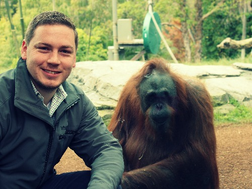
Dennis has a passion for startups and a penchant for pretty code. He graduated from Georgia State majoring in Economics and Computer Science and immediately entered the rat race as an engineer for Verizon. He quickly learned that his fascination for learning and tinkering was not ideal in the corporate world, and after a little exploring, he found a home as Voxa's Lead Backend Engineer. He is the nicest MEAN stack developer, you will ever meet and is quickly becoming a natural at Natural Language Processing and Machine Learning. If he's not in the office or at home, Dennis can be found hiking, hunting, reading, or enjoying a cold brew on a patio somewhere.
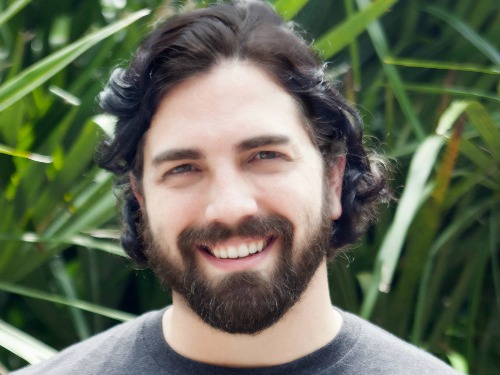
Gant is an avid Ruby developer with a penchant for public speaking. With over a decade of software development and consulting experience, Gant commonly interacts and lectures in the New Orleans tech scene. He has a passion for tinkering with electronics, contributing to open source projects, and writing technical articles. Besides being a published author on RubyMotion, Gant has successively hosted or assisted in numerous events in New Orleans, including Rails Girls workshops and opens source hackathons.
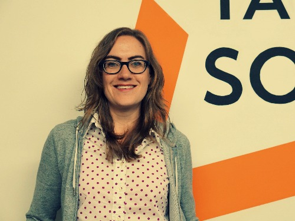
Hannah joins Tech Talent South by way of architecture and a passion for healthy living. She has always had a knack for the technical, as well as for languages and the written word, so it was only appropriate that she answered the calling of code. A TTS graduate herself, Hannah now resides in New Orleans, where she helped launch the first NOLA Tech Talent South cohort.
Paula has been telling computers what to do for over 0x21 years, and sometimes swears they talk back… seriously. She’s contributed code to commercial products and programmed in languages ranging from 360 assembly, Fortran, C++, PL/I, .NET and Ruby. She’s currently working on a Minecraft mod for her two sons, and in her spare time she talks to her pet Raspberry Pi about Ruby on Rails, works on her third degree black belt in Taekwondo, and loves teaching people how to code.
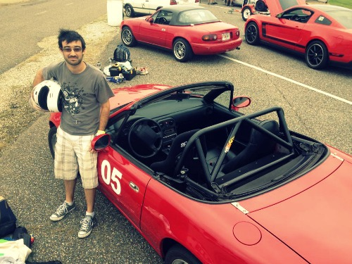
Kevin studied mechanical engineering at Georgia Tech, but spent all his extra time (and some not-so-extra) teaching himself to code. He has pitched ideas from Atlanta to San Francisco all the while trying to build something great from the comfort of a local coffee shop, or preferably somewhere with great beer. Currently, he's leading the front-end development at ShootProof, keeping the design quality up to photographer's standards. When he's not behind the computer, you can find Kevin on the racetrack or more likely wrenching on his Miata. Start a conversation about cars with him and you've got a new friend.
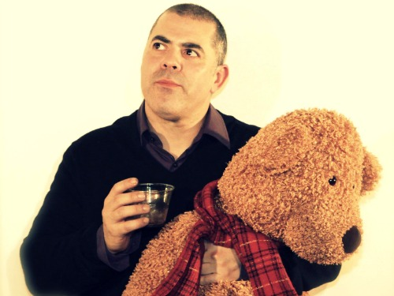
Rich Zapata has lived in Atlanta for the past 13 years, but is originally from Puerto Rico. He's a graduate of UW-Madison with a degree in Info Systems (a mix of Accounting and Comp. Sci.). A database programmer by trade, he's developed for a wide variety of databases, and he's currently a Business Intelligence engineer for Cox Automotive. In his spare time, you can find Rich tinkering away at side projects (in Rails) for fun...and beer money.
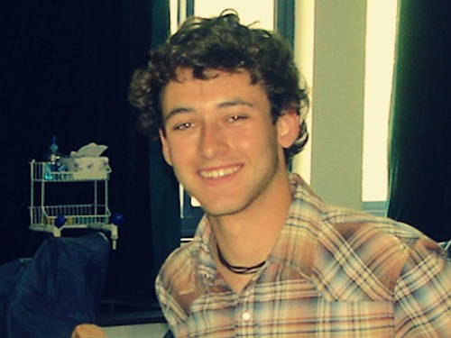
Despite a vagabond career of odd jobs and pursuits, Tim's interest in designing for the web has been perpetual since an early age. Having evolved from his dial-up days building Angelfire pages, to his current work with HTML5, CSS, and Ruby, Tim loves the challenge of extending his web skills and sharing what he has learned with others. Tim brings a diverse set of experiences to the TTS - Raleigh campus, as a graduate of NC State, with a background in film and design for new media, and as a former TTS graduate. When he’s not deep in the front-end, Tim enjoys traveling, the beach, camping, surfing and fishing…and most other things as well. Tim currently lives in Durham with his two Pomeranians, George and Ringo. You can find him on the internet at timup.ch.
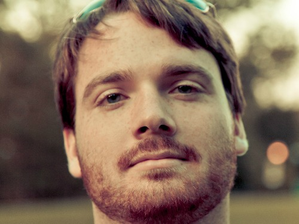
Dan is the founder of Vaporware, Inc a Raleigh raised development firm. He specializes in crafting lean web experiences for startups. An avid (board and PC) gamer, he also enjoys cycling, scifi movies, and hunting for new products to use.
Burke Ingraffia is a web developer and small business owner. He has built hundreds of websites for various clients in a multitude of industries. He has current certifications by both Google and the Linux Foundation. In the fall and in the spring he is an Extraordinary Assistant Professor at Loyola University New Orleans in the Department of Music Industry Studies where he teaches courses in front-end web development, WordPress, and music technologies. Burke is also an accomplished singer/songwriter and has been a New Folk finalist at the Kerrville Folk Festival.
Sia is one of those web developers who originally learned to program on Fortran 90 in college. So forgiver her if her code looks like it's shouting at you. Sia loves data and back-end web development but also likes to be able to implement well-designed front-end interfaces. Sia graduated from Texas A&M University with a BS in chemical engineering, and received her MBA from Harvard Business School.She is a lover of dogs and New Orleans, a part-time crochet pattern designer, and an aspirational endurance athlete.
- Believes bullet-point formatting is widely underused
- Native of Charlotte
- Founder & CEO of Zeffective Marketing
- Entrepreneur, Technophile, Hater of typos
- Devoted husband and father
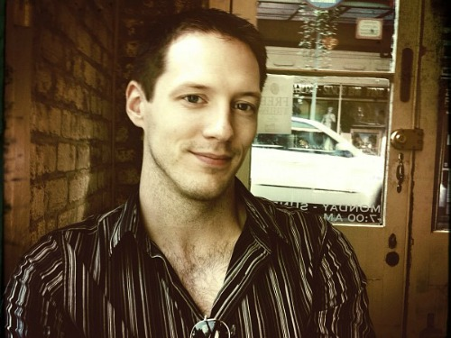
Colin originally hails from Albany, NY, but moved to New Orleans in 2002 due to a sudden distaste for miserable cold weather. Living in NOLA ever since, he started his career out of college as a marketer, but eventually decided to make a shift into web development. For three years while working in marketing, he spent his nights and weekends hunched over endless books and tutorials, often forgetting to eat dinner. In 2010 he began a freelancing career building websites for local small businesses. In 2013, he was picked up at Loyola University New Orleans as a front-end developer, specializing in responsive design. In 2014 he left Loyola for GE Capital, where he currently works as front-end developer. He speaks front-end languages, PHP, Ruby, and a pinch of Python. If you ever need something from him, bring cake. He ranks Stars in the following order: Battle, Trek, and Wars.

Sam Skinner (PhD) is a biologist by training, entrepreneur by choice, and has been programming for forty years. He recently sold his business to devote full time to web development and teaching others. With many years of experience in teaching, he draws upon this background to help students absorb the torrent of information that is part of a code immersion program.
Sam is the father of two beautiful daughters whom he has raised from birth. In his spare time, he likes kayaking, hiking and camping (He definitely does not get enough spare time!).

Randall Mardus is a 2014 graduate of Tech Talent South. Since graduating Randall has participated in Queen City Forward’s ImpactU summer incubator program and has pitched his food-tech-mobile-app startup, Giusto, at Packard Place’s PitchBreakfast. Randall is excited to assist Jim Van Fleet in Charlotte's Graduate course and working with the next generation of TTS students.